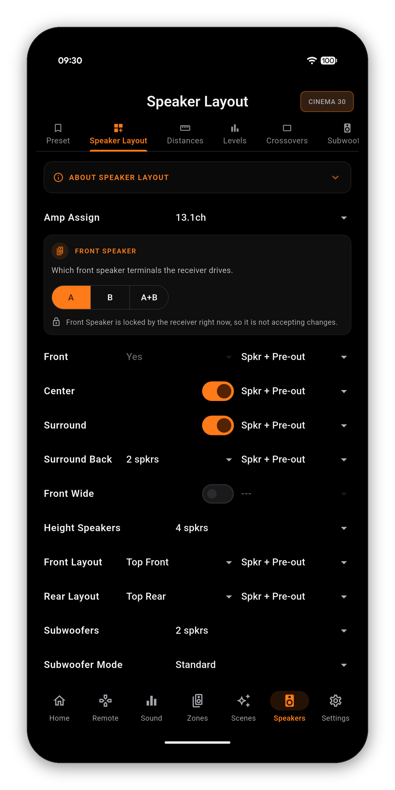
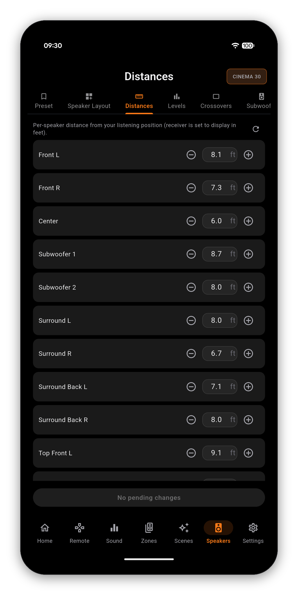
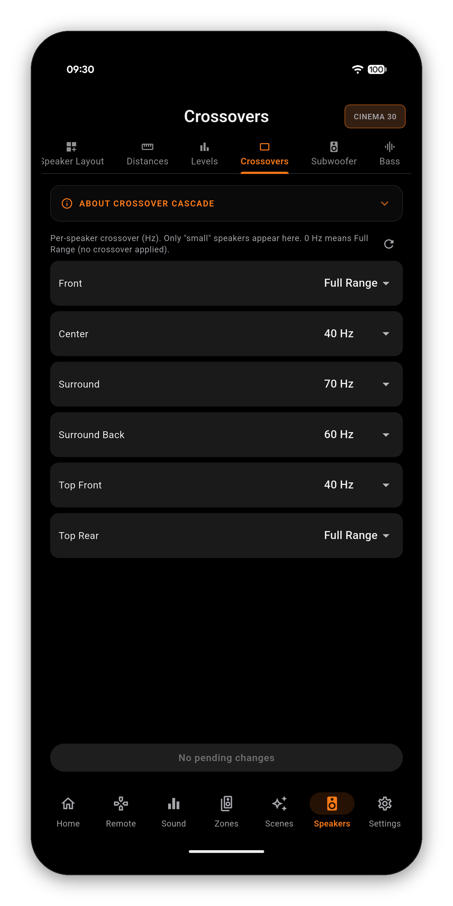
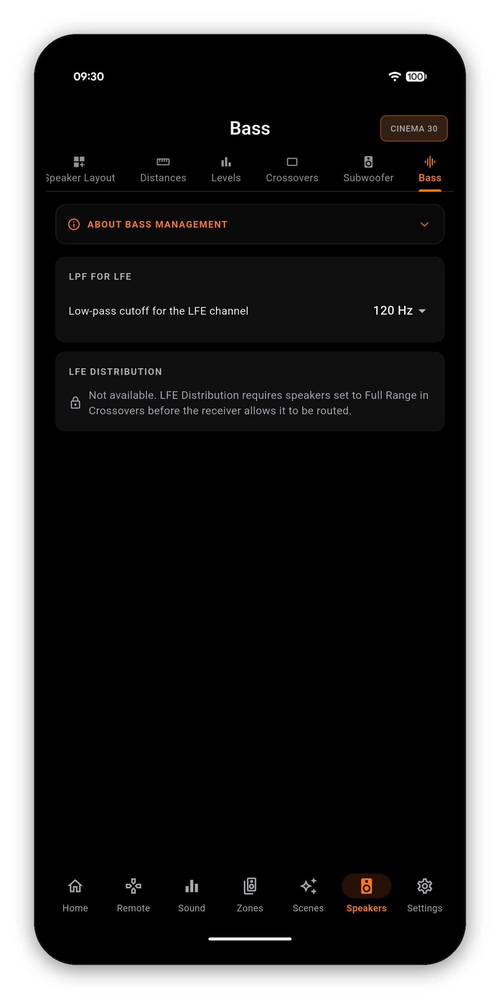
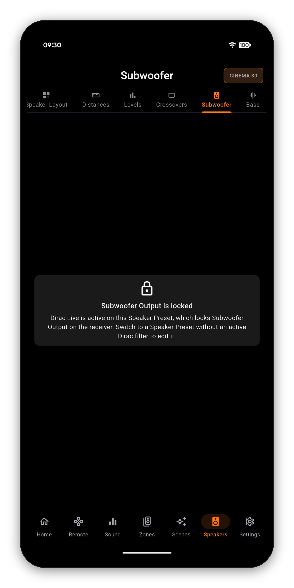
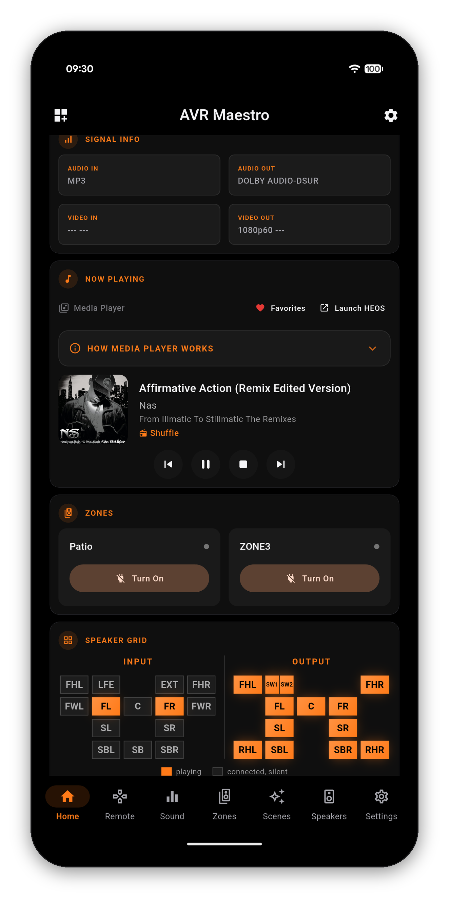

Layout, distances, levels, crossovers, subwoofer, bass management and speaker presets - the full setup suite, read live from your Denon or Marantz receiver, with each screen following the active Speaker Preset.








Tap the speaker layout and it opens as a grid: what the incoming signal carries on the left, what your receiver is actually driving on the right. A stereo track shows two input channels beside eleven outputs, and you can see the upmix doing its work.
The screens above are fully editable on a standard Speaker Preset. But when a Dirac Live filter is active on a preset, Dirac owns the layout, distances and crossovers - so instead of letting you make changes the receiver would silently ignore, AVR Maestro shows a clear lock and tells you exactly why. Switch to a non-Dirac preset to edit them.

One-time purchase, no ads, no subscriptions. Connect in under a minute.